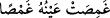

49. Doğrusu Şi’râ yıldızının Rabbi de O’dur.
“Doğrusu” müşriklerin taptıkları “Şi’râ yıldızının Rabbi de O’dur.”; yâni gerçek
Rabb’e tapınız, rab kılınanlara değil! Şi’râ ikizler burcunun arka kısmındaki parlak
yıldızdır. Ona (
) kelimesinde olduğu gibi noktasız bir ayn harfi ile “Abûr” adı da
verilmektedir. Şi’ra yıldızı “gumeysâ” olarak okunan yıldızdan daha çok ziyâ vericidir.
Şi’ra; biri Şi’ra-yı Yemânî veya Abûr, diğeri Şi’ra-yı Şâmî veya Gumeysâ adları
verilen iki parlak yıldızdan biridir. Samanyolu bu ikisinin arasını ayırmıştır.
Araplar bu iki şi’râ yıldızının Süheyl yıldızının iki kız kardeşi olduğunu iddiâ ederler.
İddiaya göre bu üçü bir arada iken aniden Süheyl yıldızı Yemen tarafına kaymış ve onun
arkasından da Abûr; yâni Şi’ra-yı Yemânî yıldızı o tarafa meyletmiş. Abûr daha sonra
samanyolu galaksisini geçerek Süheyl ile buluşmuş. Gumeysâ da yerinde kaldığı ve
Süheyl’den uzak düştüğü için ağlamış ve gözerinden çapaklar akmış... Yâni Gumeysâ
Abûr yıldızından daha az bir ışığa sâhip olmuş ve parlaklığı daha sönük bir hale gelmiş.
(
) gözlerden çapak akmasıdır. (
) “Falanın gözünden çapak aktı”
anlamında kullanılır.
Huzâa kabilesi Şi’râ yıldızına tapardı. Onlara bunu âdet hâline getiren kişi Ebû Kebşe
idi. Bu onların içindeki eşraf tabakasından bir zat idi. O Huzâalılara: “Yıldızlar göğü
enlemesine, bu yıldız da boylamasını kat etmiştir. Bu Şi’râ yıldızına benzer başka bir
yıldız yoktur.”demiş ve onların buna tapmalarına sebep olmuştur. Ebû Kebşe putlara
ibâdet konusunda Kureyş’e muhâlefet etmekteydi. Bu nedenle Kureyş Rasûlullah (s.a.)’e
“İbni Ebî Kebşe” diyor ve -her ne kadar doğruluk payı bulunmuş olsa da- bu sözleriyle
Nebi (s.a.)’in onun nesebinden olduğunu kasdetmiyorlardı. Zira Ebû Kebşe, Nebi
(s.a.)’in anne tarafındaki atalarından biri idi. Bilakis Kureyş bu sözle, Nebi (s.a.)’in de
putlara tapmaması ve yeni bir din getirmesi husûsunda onunla mutabık kaldığını murâd
ediyordu. Oysa Nebi (s.a.) putlara ibâdeti terkte Kureyş’e muhâlefet eden Ebû Kebşe’ye
mutabık kalmasının yanı sıra Şi’râ’ya ibâdeti terkle de Ebû Kebşe’ye muhâlefet etmiştir.
Huzâa kabilesinin taptığı Kelbu’l-Cebbâr diye de tesmiye olunan nefs-i şi’râ ehl-i
ehvâ/heva sahiblerine ve Ebû Kebşe nâmı da filozof ve zındıka taifesi olan ehl-i bid’ate
işâret etmektedir.
50. Ve şüphesiz ki önceki Âd kavmini O helâk etti.
“Ve şüphesiz ki önceki Âd kavmini O helâk etti.” Bu kavim Hûd (a.s.)’ın kavmidir.
Onlar kasıp kavuran şiddetli bir rüzgâr ile helâk edildiler. Sonra gelen Âd da İrem